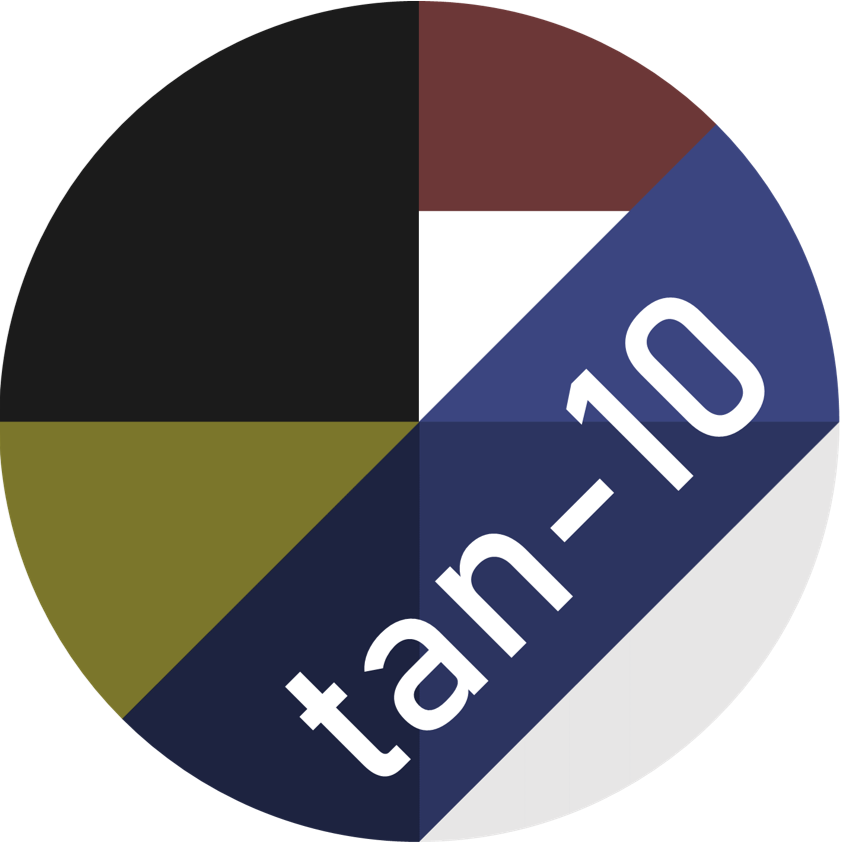

“Tangent LAB”自体は研究員の構成・名前等も含め、すべて架空です。実在しません。
中の人(tan-10)が好き勝手にひとりで楽しんでいます。
現在研究員は2人です。
| アイコン |  |
|---|---|
| 好きな色 | #3b4580。紺色っぽい色です。 |
| 好きなこと | YouTubeで音楽を聴くこと。 |
| 見たアニメ | 「からかい上手の高木さん」「かぐや様は告らせたい」「乙女ゲームの破滅フラグしかない悪役令嬢に転生してしまった…」「生徒会役員共」「五等分の花嫁」「魔王城でおやすみ」※大体アニメから入る。魔王城でおやすみだけ漫画から。 |
| その他 | 男子。放送部に入っていた。生徒会長経験者。ScratchDayに参加したい。 |
| アイコン | ©️PQS2017（https://scratch.mit.edu/projects/376245953/で作成） |
|---|---|
| 好きな色 | #15a7a4。水色っぽい色です。 |
| 好きなこと | WEBサイトを作ってみること。 |
| その他 | 男子。tan-10に声をかけられてTangent LABへ（という設定）。 |
諸事情(下記参照)により、問い合わせフォームやメールアドレスを掲載することができません。
Scratch関係については、Scratchのユーザーページでのやり取りでお願いします。
ちなみに、tan-10のことを「Scratch以外」で知った方は、「そこ」でのダイレクトメッセージなどもご利用になれます。
2013年より使用している中の人のペンネームです。この名前でゲームやネット関係のアカウントを作っているため、どこかしらで見かけたらたぶん僕です。
2020年より使用している中の人のペンネームです。本名ではありません。「本名っぽい仮名があったら便利そう」と思って作りました。時々登場しますが、こればっかりはマジで個人情報ではないので。
2021年3月7日までのこのサイト名です。過去の話です。
行っていません。あくまでも架空の研究所なので、これからも個人で運営します。
Scratchで親交のあった方々と相互リンクを結ぶうえで、「SNSのアカウントやメールアドレスを書かない」ことが条件になっているからです。これはScratchのコミュニティーガイドラインがもとになっています。
今はScratchで親交があった方々が多いですが、他でtan-10のことを知った方も申請できます。以下に条件を記します。
・tan-10とプログラミング、放送、デザインなどで親交のある方のサイトであること
・ご自身のサイトに、このサイトのURL（ https://tan-10.github.io ）を書くこと
これらの条件を満たしていただける場合は、サイト名とトップページのURLを何かしらの方法で送ってください。
このサイトはいわゆる「リンクフリー」なので、許可なしにお好きな場所にURLを貼っていただけます。是非お友達に紹介してください。